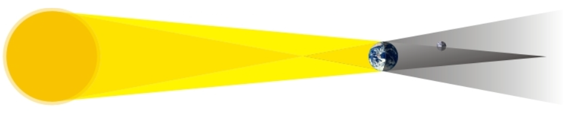
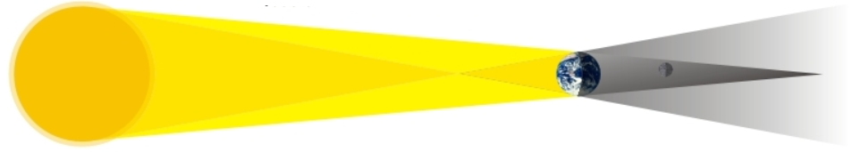

Twilight
Descubra mais ▼
Eclipse Anular
Eclipse Solar Total
Eclipse Parcial
Qual é a definição de eclipse?
Fenômeno onde um astro fica na sombra de outro.
É o movimento constante do Sol ao redor da Terra
Evento que ocorre quando um cometa passa pela Terra
Por que somente algumas pessoas enxergam o eclipse solar?
A visibilidade do eclipse solar é aleatória
A visibilidade de um eclipse solar depende da localização geográfica.
Somente astrônomos profissionais têm acesso a tecnologia especial para ver eclipses solares.
Qual é a diferença entre um eclipse Solar e um Lunar?
Um Eclipse Solar ocorre quando a Lua esconde o sol enquanto no Lunar a Lua é escondida pela Terra
A diferença entre um eclipse solar e um lunar é apenas a posição da Lua no céu.
Eclipses solares e lunares são termos diferentes para o mesmo fenômeno de bloqueio da luz do Sol pela Lua
Resolva o quebra-cabeça
 
Penumbral
Parcial
Total
Ache palavras sobre o Eclipse